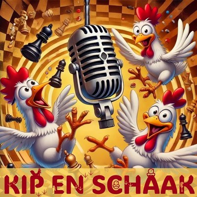

♔
Lennert Lenaerts
FIDE-meester · Elo 2368
Korte bio volgt.
FIDE-profielDe (licht satirische) schaakpodcast
Drama op het BJK, interclubvoorspellingen, identiteitsfraude en de Tokkies: wij kakelen over alles wat er (mis)gaat in de schaakwereld.

Kip en Schaak is een podcast door en voor schaakliefhebbers. Of je nu net de regels kent of al jaren clubschaak speelt: wij bespreken het spel met humor en (soms) diepgang.
FIDE-meester · Elo 2368
Korte bio volgt.
FIDE-profielFIDE-meester · Elo 2282
Korte bio volgt.
FIDE-profielElo 2120
Korte bio volgt.
FIDE-profielStuur zeker je eigen vragen, dilemma's, quizjes en verhalen naar ons!